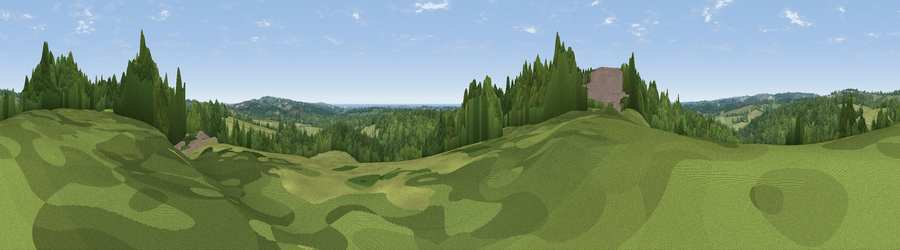

Viewpoint near Catsfield
#22638 in England · top 27% of its area beats it · near Catsfield · access?Where it is
The exact computed spot (TQ 71875 15825). Click the marker for map links.
Public access: no public right of way or access land is recorded at this exact spot — it may be on private land. Computed from Natural England's CRoW access layer and OpenStreetMap rights of way — not the legal definitive map. Always verify locally.
The view, rendered

A 360° render of this exact spot computed from the terrain model, tree cover and land cover — summer colours, afternoon light, calibrated against photographs of famous viewpoints. Real trees, hedges and buildings will differ in detail.
The panorama
Grey silhouette: terrain skyline in each direction (720 bearings, Earth curvature and refraction included). Dashed green: skyline with trees (+15 m) and buildings (+8 m) as obstacles. Blue strip: how far the ground is visible on each bearing.
Where the view opens
Wedge length = distance to the farthest visible ground on that bearing (vegetation-aware). Rings at 10, 25 and 50 km.
What fills the view
62% woodland · 33% grassland · 2% built-up · 2% water · 1% cropland
Angular shares of the visible panorama (visual magnitude), not map area. Landscape diversity 0.38 (0–1 Shannon).
Key numbers
More beautiful places nearby
The staircase of upgrades: each row has a higher view potential than everything closer. Driving times are estimates from straight-line distance, calibrated against real road routing — check an actual route before setting out.
| Place | Direction | Drive | Score |
|---|---|---|---|
| Viewpoint near Catsfield | SW · 2 km | ~4 min | 56.8 |
| Viewpoint near Netherfield | NNW · 4 km | ~9 min | 60.3 |
| Viewpoint near Telham | ESE · 6 km | ~13 min | 62.2 |
| Viewpoint near Dallington | NW · 6 km | ~13 min | 67.2 |
| Viewpoint near Brightling | NW · 7 km | ~14 min | 68.0 |
| Brightling Obelisk [Brightling Down] | NW · 7 km | ~15 min | 69.1 |
| Viewpoint near Three Oaks | ESE · 11 km | ~21 min | 69.3 |
| Viewpoint near Hastings | ESE · 13 km | ~24 min | 70.5 |
50.91629, 0.44373 · source: screening · position refined by local search. Computed location — check access rights before visiting.